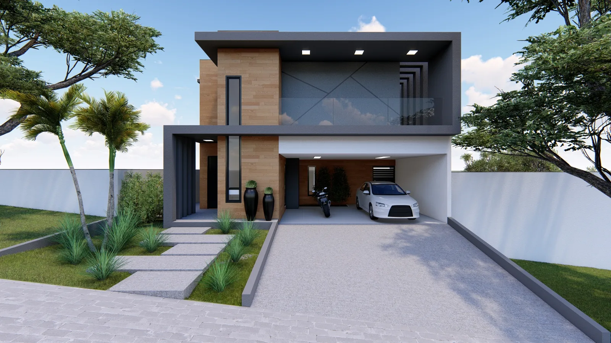
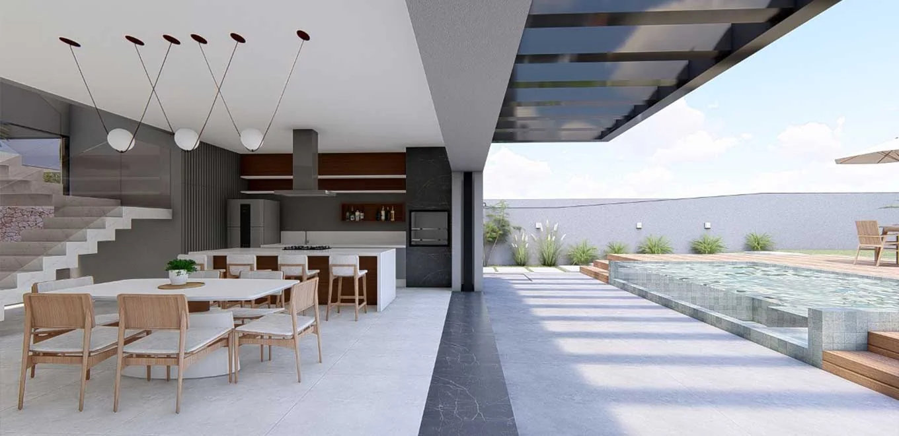
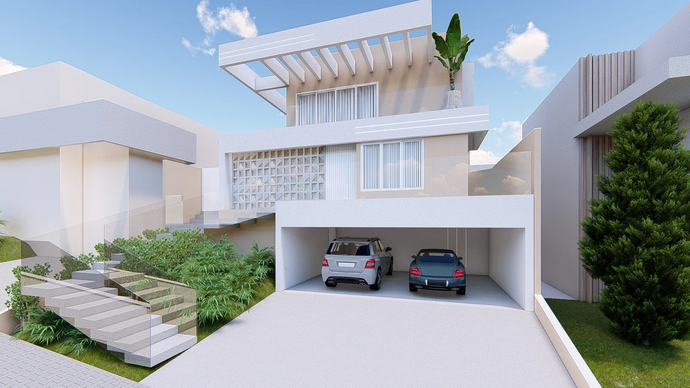
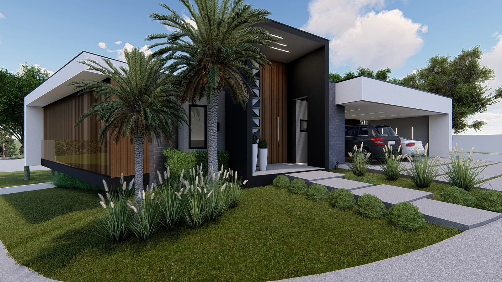
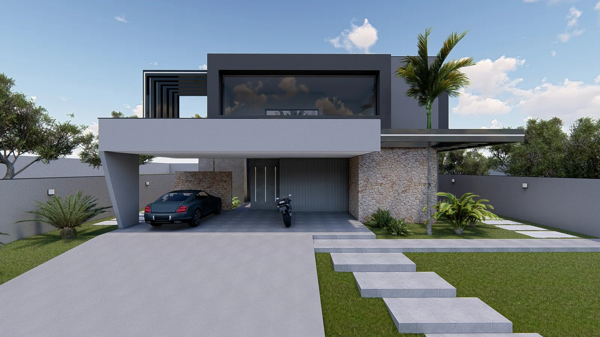
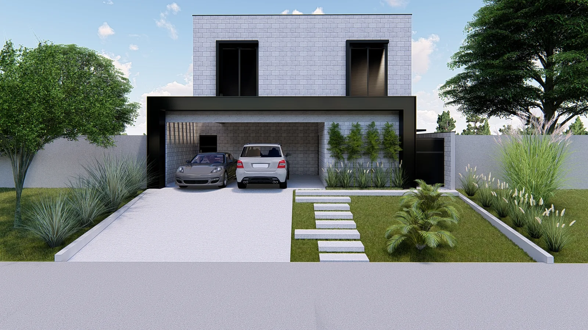
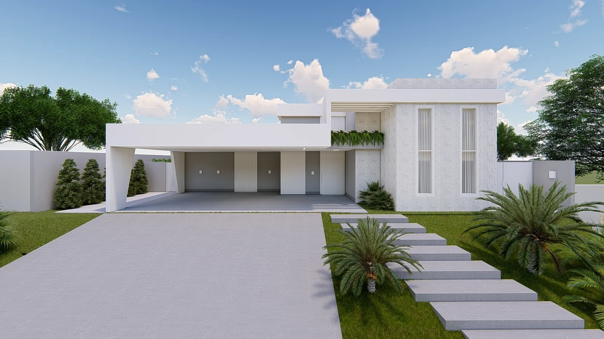

Portfólio
Cada projeto,
uma forma de viver.
Arquitetura, interiores e obras residenciais apresentados como parte de uma jornada — não apenas como uma sequência de imagens.

Casa HL
Residencial
Casa JT
Residencial
Casa MN
Residencial
Casa SE
Residencial
Casa EF
ResidencialMais projetos
Continue explorando os projetos desenvolvidos pela AZO.
Seu projeto
pode ser o próximo.
Conte sobre o terreno, imóvel ou obra e converse com a equipe.
Solicitar uma conversa ↗